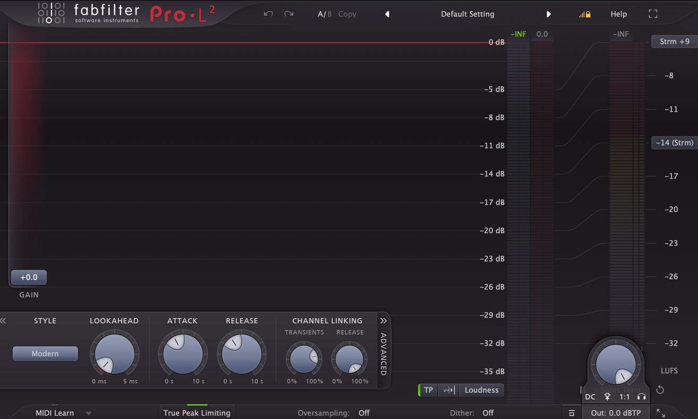
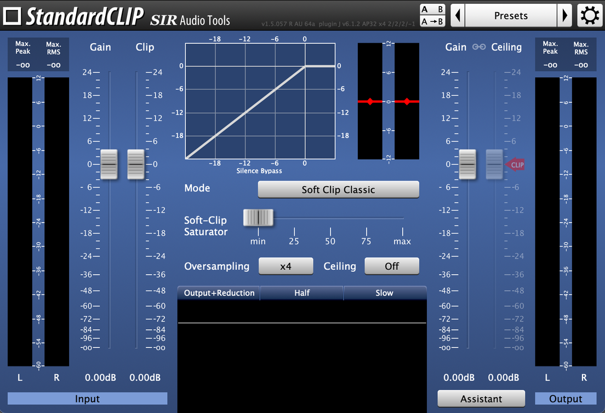

La mezcla (mixing) es el proceso de combinar todas las pistas de una canción y equilibrar su volumen, frecuencias y posición espacial para conseguir coherencia sonora. Buscamos que cada pieza encaje en el puzzle general: muchas veces hay que decidir qué instrumento tiene más importancia y debe ocupar ciertos espacios (frecuencia, campo estéreo, volumen) por delante de otros.
Mezcla estática: el primer acercamiento al sonido de la canción, a través de niveles de volumen, ganancia y paneo. Es un paso que se suele infravalorar — sobreprocesar nos hace olvidar que muchas veces la solución es tan sencilla como subir el volumen para realzar una pista, bajarlo para evitar enmascaramientos, o panear para buscarle sitio a un sonido.
Mezcla dinámica: aquí ya entran los efectos de audio (EQ, saturación, compresión...). Se trabaja de menos a más, ajustando lo que ya teníamos definido en la mezcla estática.
Buscamos un equilibrio frecuencial correcto en cada pista o grupo, individualmente y en conjunto con el resto de la mezcla. Hay tres tipos:
Los tres tipos se pueden aplicar en distintas zonas del campo estéreo (Stereo, L, R, Mid o Side).
La saturación funciona como un recurso de EQ aditiva: mientras la ecualización sube los dB de las frecuencias seleccionadas, la saturación además genera armónicos nuevos en esas frecuencias, enriqueciendo el sonido. También puede aplicarse en distintas zonas del campo estéreo.
La compresión se usa siempre que sea necesaria — cuidado con comprimir por comprimir. Suele ser clave en instrumentos grabados (voz, batería, guitarra, bajo...) para modelar el sonido con equilibrio.
Transient shaper: procesador de dinámica que altera la envolvente de volumen de un sonido, en concreto su ataque y su decay — permite enfatizar o desenfatizar transitorios, y relajar o aumentar el release.
Reverb: las reverbs cortas ayudan a situar los sonidos en el espacio, y además pueden servir casi como una EQ, dando cuerpo, apertura estéreo o profundidad.
Sidechain: para compaginar sonidos que ocupan el mismo espacio de frecuencia — el clásico bombo/bajo o voz/sintetizador.
El mastering es el paso final tras la mezcla: cogemos la canción ya mezclada (con todos sus elementos relacionándose correctamente entre sí) y la llevamos un paso más allá, para que suene dentro de los estándares de la industria en volumen y equilibrio frecuencial. Buscamos consistencia (en la canción y, si es un álbum, entre todas las canciones) y sonoridad (loudness): elevar el volumen de la mezcla al estándar comercial exigido por la industria, trabajando limitación, clipping, EQ, compresión y saturación.
Un limitador es un compresor con un ratio muy alto que establece un tope de volumen insuperable. Su función principal es evitar la distorsión digital y aumentar el volumen percibido sin sobrepasar el máximo permitido. Sus parámetros clave:

FabFilter Pro-L2, uno de los limitadores más usados en mastering.
Tip: la escucha delta te deja oír solo la parte del audio que el limitador está afectando — si con delta activado escuchas la canción entera (o su parte armónica), es que te estás pasando de limitación. El unity gain, por su parte, ajusta automáticamente el nivel de salida al inverso de la ganancia añadida, para poder escuchar la limitación real sin el "engaño" de la subida de volumen.
Un clipper recorta instantáneamente los picos de una señal que superan un umbral — a diferencia del limitador, que comprime la onda, el clipper la corta de golpe. Esto añade distorsión armónica y genera más volumen percibido. Hay dos tipos:

StandardCLIP, con la curva de clipping bien visible: todo lo que pasa del umbral se recorta.
Cuando le pides a un limitador que reduzca 6 dB, "aplasta" la onda con su attack y release, lo que puede generar bombeo o pérdida de pegada. El clipping, en cambio, recorta los picos más altos de forma instantánea, sin tiempos de recuperación: al eliminar esos picos milimétricos, ganas headroom para subir el volumen general sin que el limitador final tenga que trabajar tanto.
La mejor solución suele ser combinar ambos. Una cadena de mastering habitual sería:
Mezcla y mastering es una de las partes centrales del curso de Producción Musical Avanzada de IRL Estudios.
Para más info escríbenos a nuestro mail: irlestudiosmadrid@gmail.com